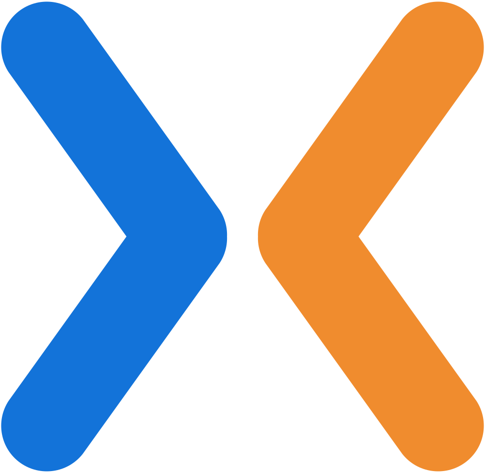
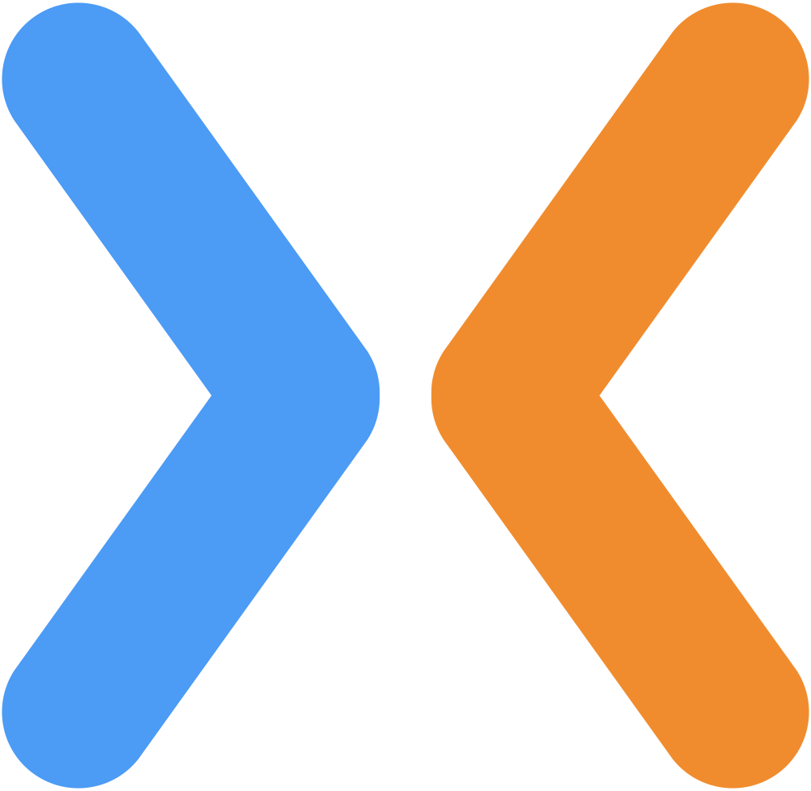
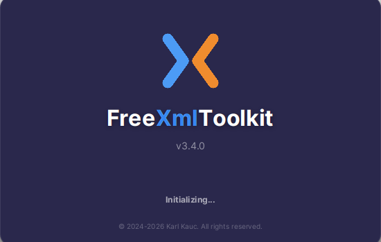
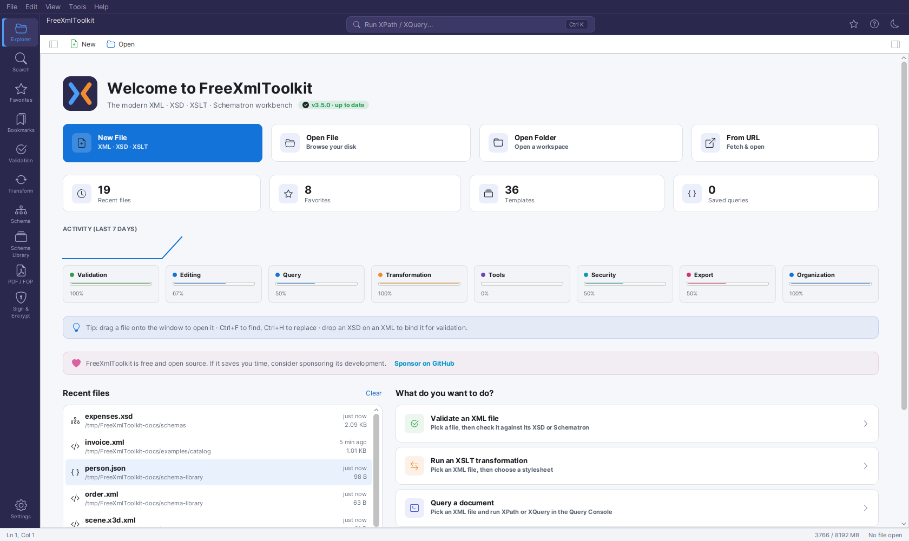
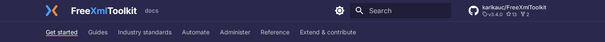
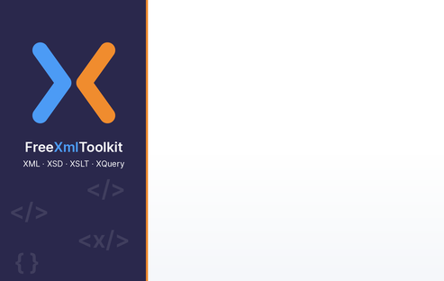

The mark
Two tag brackets form the X of XML
A closing > in blue and an opening < in orange meet in the
middle. Read together they make an X; read apart they are the brackets every XML document is built from.
What it stands for
- XML: the brackets are the syntax the application edits.
- Two sides: blue for the document, orange for what you do with it (transform, check, publish).
- Open: the strokes never close into a box; the tool is free and open source.
The angle of the brackets is the one recurring shape of the brand. It may appear as a
cut between sections or as the › list marker; nothing else imitates the mark.
Logos
One symbol, four marks, three lockups
Every mark exists in colour, for dark grounds, in black and in white. Pick the version by the ground it sits on, not by taste.
App icon
Symbol



Short mark fxt
For the command line only: the program is called fxt-cli, and the orange stroke of the x
repeats the right bracket.
Wordmark
“Xml” carries the blue of the left bracket; the rest is navy, or white on dark grounds.
Lockups


Usage
Give the mark room, keep it legible, leave it as drawn
Minimum sizes
| Mark | Screen | |
|---|---|---|
| App icon | 16 px | 5 mm |
| Symbol | 16 px high | 5 mm |
| Short mark fxt | 14 px high | 5 mm |
| Wordmark | 90 px wide | 25 mm |
| Horizontal lockup | 130 px wide | 35 mm |
Below these sizes use the next smaller mark: the symbol instead of a lockup, the app icon instead of the symbol.
Which version on which ground
| Ground | Use | Why |
|---|---|---|
White or the light surface #f5f7fa | Colour | Navy text reaches 13.9:1, the blue 4.7:1 |
Navy #2a284c or the dark theme | On dark | The left bracket and “Xml” switch to light blue (4.9:1 on navy) |
| Photos, colour fields, busy backgrounds | App icon | It brings its own navy ground |
| One-colour print, engraving, fax | Black or white | Never a single brand colour on its own |
Do not
Also do not add effects (shadows, outlines, gradients), set the name in another typeface, or rebuild the mark from text characters. The macOS app icon carries a shadow because Apple's icon grid asks for one; that file is generated, not drawn by hand.
Colour
Navy as the ground, blue for action, orange once
Five brand colours. The application's design tokens (src/main/resources/css/design-tokens.css)
use the same values, so the app, the installers and the documentation look like one product.
Rules
- Orange is an accent, never text on white. It reaches only 2.5:1 there. Use it for one mark per screen: the active tab line, a focus ring, the installer's divider. On navy it reaches 5.6:1.
- Blue text on white uses
#1068c4(5.5:1); buttons fill with#1373d9and white text (4.7:1). - No gradients. Grounds are flat navy or flat light surfaces.
- Semantic colours win. Errors are red and success green, whatever the area of the app.
Application tokens
| Token | Light theme | Dark theme | Use |
|---|---|---|---|
-fxt-primary | #1373d9 | #4c9bf5 | Accent, focus, selection |
-fxt-primary-text | #1068c4 | #4c9bf5 | Blue as text |
-fxt-primary-fill | #1373d9 | #1f6fd1 | Filled buttons with white text |
-fxt-accent | #f08c2e | #f59f46 | Orange accent |
| Chrome (header, activity bar) | #2a284c | #2a284c | Same navy in both themes |
-fxt-bg-canvas | #f5f7fa | #0f1419 | Window ground |
-fxt-bg-surface | #ffffff | #161b22 | Panels, cards |
-fxt-border | #dde1e7 | #2a323d | Lines |
-fxt-text-primary | #1a1d21 | #e6eaf0 | Body text |
-fxt-text-secondary | #5a6472 | #9ba6b3 | Secondary text |
-fxt-success / -fxt-danger | Results: valid, error | ||
-fxt-warning / -fxt-info | Results: warning, hint |
Workflow colours
Each area of the application has a family of its own for its rail icon, panel title and primary action. They never colour the logo.
| Area | Accent (light) | Rail (dark) |
|---|---|---|
| Explorer (workspace) | #1373d9 | #4c9bf5 |
| Search | #4c5fd5 | #748ffc |
| Favorites | #e69500 | #ffd43b |
| Validation | #2f9e44 | #51cf66 |
| Transform | #f08c2e | #f59f46 |
| Schema | #6f42c1 | #b197fc |
| Schema Library | #be4bdb | #da77f2 |
| PDF / FOP | #d6336c | #f783ac |
| Sign & Encrypt | #1098ad | #4dd4e8 |
| FundsXML | #12a594 | #38d9a9 |
| PK-Meldewesen | #a12b4b | #f08aa6 |
| Help, Settings | #5a6472 | #9ba6b3 |
Typography
Inter for words, JetBrains Mono for code
Both are open source (SIL Open Font License 1.1) and ship with the application
(src/main/resources/css/fonts/) and the documentation (docs/overrides/fonts/),
so nothing is loaded from a third party.
Inter
abcdefghijklmnopqrstuvwxyz 0123456789
- Bold 700: the wordmark, page titles
- Semibold 600: headings, buttons, labels
- Medium 500: the claim, emphasis in tables
- Regular 400: running text
JetBrains Mono
{ "id": "PO-1042" } 0O 1lI
- Bold 700: the short mark fxt
- Medium 500: code, paths, versions, captions
- Small uppercase labels with 0.1em tracking, as above each heading on this page
Scale in the application
32 pxWelcome to FreeXmlToolkit24 pxSchema analysis18 pxValidate with Schematron14 pxThe document is valid against order.xsd.13 pxPanel text and table rows12 pxStatus bar, captions11 pxSection labelThe application offers four interface text sizes (Settings → Appearance); the values above are the “Normal” size. Code editors use JetBrains Mono at 8–32 pt.
In use
Where the brand appears
App icon at system sizes
Drawn for each size, not scaled down from one large file. Windows takes 16–48 px for the taskbar and title bar, macOS up to 1024 px for the Dock and Finder.
| Platform | File | Sizes | Used by |
|---|---|---|---|
| Windows | release/logo.ico | 16, 20, 24, 32, 40, 48, 64, 128, 256 px | Installer (MSI, EXE), app launcher |
| Windows | update-helper/icon/logo.ico | same | Update helper |
| macOS | release/logo.icns | 32–1024 px, Apple icon grid | App bundle, DMG, PKG |
| macOS | img/logo-macos.png | 1024 px, Apple icon grid | Dock icon at run time |
| Linux | packaging/linux/share/icons/hicolor/ | 16–512 px | Desktop entry, app menus |
| All | img/logo-16 … logo-256.png, img/logo.png | 16–512 px | Window and taskbar icon of every window |
Application and documentation




Name and voice
One word, plain sentences
The name
- FreeXmlToolkit: one word, capital F, X and T, “Xml” in mixed case.
- Not “Free XML Toolkit”, “FreeXMLToolkit”, “FXT” or “Freexmltoolkit”.
- fxt-cli: the command-line program, always lower case; the short mark
fxtstands for it. - Claim: “Your Complete XML Workstation”, only together with the name.
How we write
- Factual and concrete: name the standard and the version (XSD 1.1, XSLT 3.0), not “powerful” or “modern”.
- No superlatives. Comparisons with other editors are fair, including where they offer more.
- Say what happens: “Validate”, then “Valid · 0 errors”.
- Be open about data: what is sent, what never is, how to switch it off.
- English first; the application is also translated into German.
Files
Sources and generated files
The SVGs in this folder are the sources. Every raster file is generated from the logo geometry; change the geometry or the colours in the scripts, then run them again.
| Where | What | Made by |
|---|---|---|
release/brand/*.svg | All marks and lockups in four colour versions | Logo suite S1 (source) |
src/main/resources/img/logo*.png | Window icons, splash symbol, macOS Dock icon | scripts/make-app-icons.py |
release/logo.ico, release/logo.icns, update-helper/icon/logo.ico | Windows and macOS icons | scripts/make-app-icons.py |
packaging/linux/share/icons/hicolor/ | Linux icons | scripts/make-app-icons.py |
src/main/resources/xsdDocumentation/assets/logo.png | Header of generated schema documentation | scripts/make-app-icons.py |
release/win-dialog.png, release/win-banner.png | Windows installer images | scripts/make-installer-images.py |
docs/img/logo-symbol.svg, logo-wordmark.svg, favicon.svg | Documentation header and favicon | Copies of the sources |
src/main/resources/css/design-tokens.css | Colour tokens of the application | Hand-maintained |
docs/overrides/stylesheets/extra.css | Colours and fonts of the documentation | Hand-maintained |
Regenerate after a change:
python3 scripts/make-app-icons.py && python3 scripts/make-installer-images.py